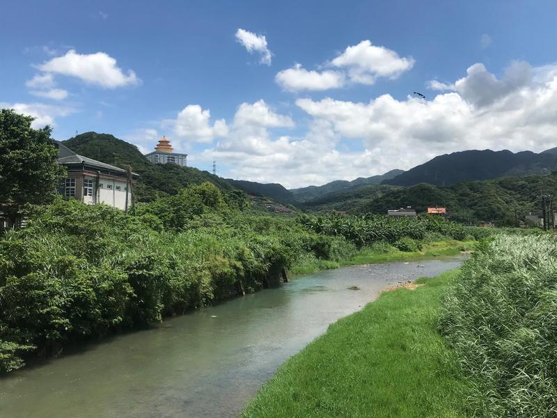
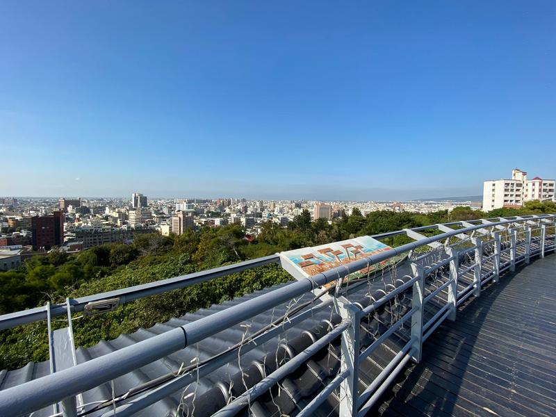
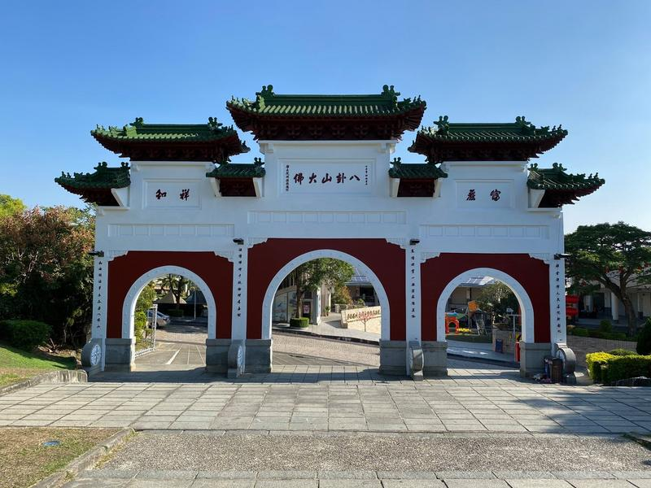
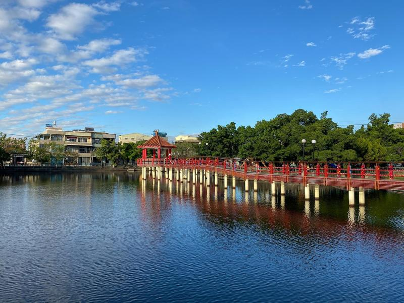
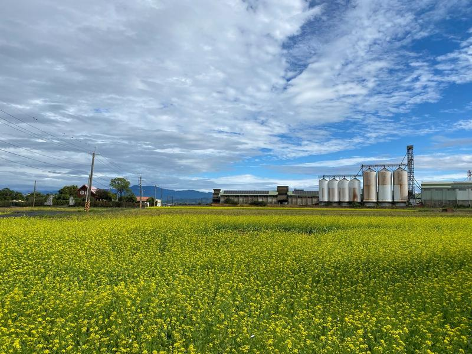
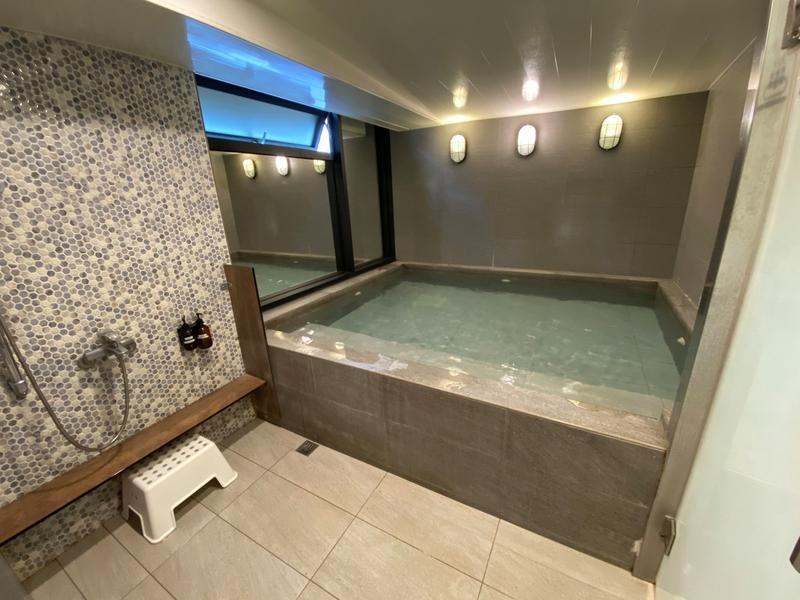
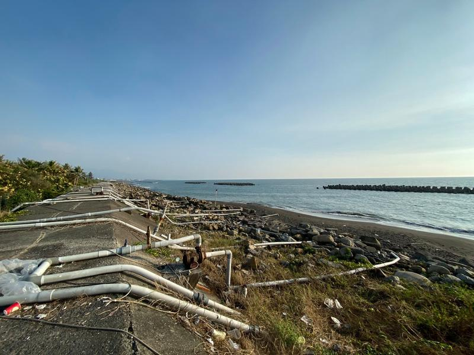
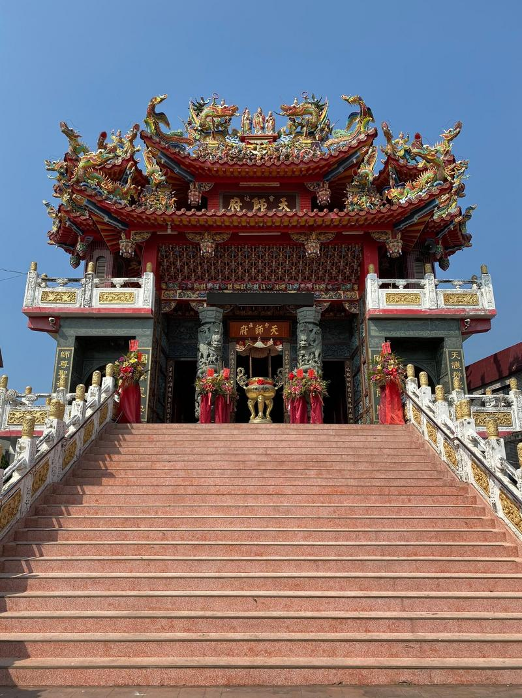
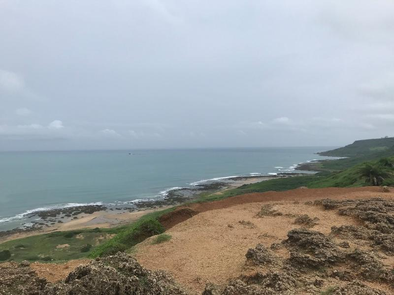

Pěšky přes Tchaj-wan zima 2019
Jako první Čech jsem přešel Tchaj-wan od nejsevernějšího po nejjižnější bod.
Trasa celého výletu. Původně jsem vyrazil jen s mapou, ale to bych většinu času hledal, jak se vyhnout dálnicím, takže jsem se vrátil k digitální náhradě. Alespoň jsem si mohl na mapě udělat značku, když jsem narazil na něco nebo někoho zajímavého.
Zhruba 2 hodiny autobusem od Taipei je maják Fuguijiao, nejsevernější místo na Tchaj-wanu. Tady cesta začíná.
První kilometry podél pobřeží.
Odbočka s cílem dojít večer na okraj Taipei přes národní park Yangmingshan, což mi snažili rozmluvit hned dva Tchajwanci, které jsem na cestě potkal.

A tak jsem pokračoval podél pobřeží …
… kolem různých přístavů …
… až do geoparku Yehliu.
Geopark Yehliu.
Geopark Yehliu.
Cesta do Taipei podél pobřeží.
Malé lodě v Keelungu.
Velké lodě v Keelungu.
Zvláštní budovy na cestě do Taipei.
Příchod do Taipei pozdě večer.
Bydlení u tchajwanské rodiny v Taipei. Babička rázně oznámila, že mě v žádném případě nepustí dále, dokud nedostanu pravý tchajwanský stejk.
Cesta přes Taipei.
Metropolitní park v Taipei.
Pohodlné sedačky pro cestující, kteří čekají na autobus.
Přechod od východního pobřeží k západnímu.
Východní pobřeží Tchaj-wanu. Všude jsou větrné turbíny.
Podél západního pobřeží.
Cesta přes tunely.
Tchaj-wan je bohatá země. Lidé mají na zahradách i vlaky.
“Postavíme vám tady továrnu. Bude tady hodně komínů”
“NIKDY!!!”
“Ani když vám na ty komíny namalujeme barevná prasátka?”
“Když tam budou barevná prasátka, tak jo.”
Město Taichung. Kdysi ho zasáhlo velké zemětřesení a takhle to dopadlo. Tohle je škola. Naštěstí se vše odehrálo pozdě v noci, a tak ve škole nikdo nebyl.
Škola zůstala přesně tak, jak přečkala zemětřesení. Dnes je z objektu muzeum.
Vánoční Taichung.
Noční parky v Taichungu.
Říkal jsem si, že když nebudu vědět kam dál, tak vylezu na kopec a podívám se. A tak když jsem viděl v dálce velkou sochu Buddhy…
… vylezl jsem na kopec a podíval se kam dál. Je to ještě daleko.

Interiéry tchajwanských chrámů.
Brány do chrámů.

Krajinky přes den.
Krajinky v noci.

Centra měst.
Nejrovnější palmy, které jsem kdy viděl.
Tady jsem odpočíval než mě vyrušil had.
Cesta přes pole.
Jako kůl v plotě.
Parky v noname městech.

Podobně jako v Japonsku i zde na Tchaj-wanu je nejoblíbenější dětskou postavičkou pan Prdel.
Vlastně celý Tchaj-wan často Japonsko připomíná.
Nekonečná cesta.
Objevil jsem uzavřenou vlakovou zastávku.
Je z toho muzeum. Takhle se jezdilo na Tchaj-wanu před 70 roky.
Jedna z mých tchajwanských hostitelek.
Tchajwanské domy.
Banány podél cest.
Budovy s Medvídkem Pú. To by v Číně možné nebylo.
Sen každého pěšáka. Jdeš hodinu a pak je zablkovaná silnice.
Uličky v Tainanu.
Uličky v Tainanu podruhé.
Žluté pole. Cítím se jako doma.

Podle Google Map je tohle cesta vhodná pro auta. Nedívím se, že je v Číně zakázali.
Čerpací stanice u samoobsluh.
Tchajwanské poštovní schránky.
Pomalu přicházím do Kaohsiungu, posledního většího města na jihu. Nedostatek deštníků tady není.
Deštníky jsou všude.
Budovy v Kaohsiungu.
Stanice metra v centru Kaohsiungu.
Bydlím v hotelu s japonským onsenem. Člověk se musí svléknout donaha, poté si sednout na tu bílou židličku, namydlit se, umýt se a poté může do bazénku. Protože se Tchajwanci na rozdíl od Japonců stydí, byl jsem tu vždy sám.

Noční trhy v Kaohsiungu.
Poslední ráno v Kaohsiungu a vyrážím na závěrečných 113 km na jih země.
Tchajwanská flora podél cesty.
Obsesí deštníky trpí velká část obyvatel Tchaj-wanu.
Pro všechny škaredé místo, pro mě ale hezké. Dorazil jsem k moři, přešel jsem celou zemi od severu na jih. Zbývá posledních 80 km.

Vojenské bunkry podél cesty na jihu.
Buddhistické chrámy podél cesty.

Buddhistické chrámy podél cesty.
Za setmění jsem dorazil do Kentingu. Můj nejtěžší den na cestě, přes 50 km.
Poslední den na trase přes národní park Kenting do cíle.

Národní park Kenting.
Posledních pár kilometrů národním parkem Kenting.
Meteostanice pár metrů od cíle.
A jsem tady, nejjižnější místo Tchaj-wanu! Po více než 700 km a až na třetí pokus, ale stálo to za to!
Mně ale za pár hodin letí letadlo z Taipei. Takže honem na autobus zpět do Kaohsiungu a poté na vlak do Taipei.
Na Tchaj-wanu jezdí stejné shinkanseny jako v Japonsku, takže rychlostí 300 km/h přejedu za hodinu a půl to, co jsem několik týdnů šel pěšky.

A pak na letiště vybojovat palubní vstupenku do Číny, ale to už je jiný příběh.